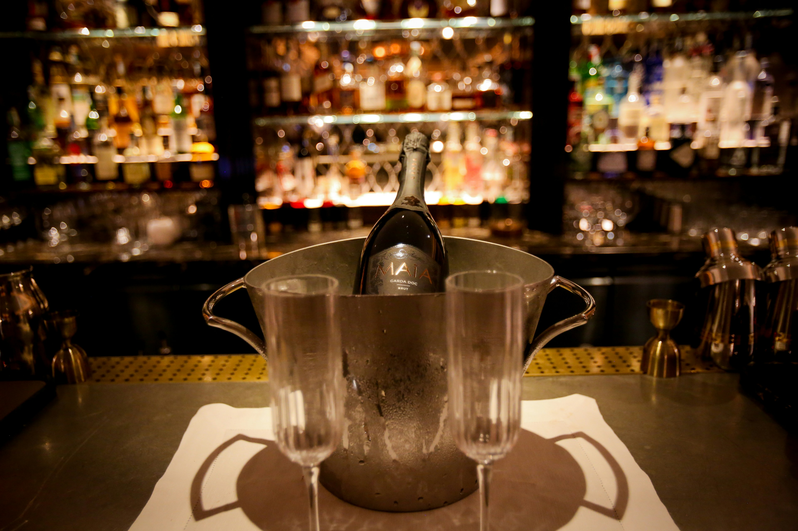
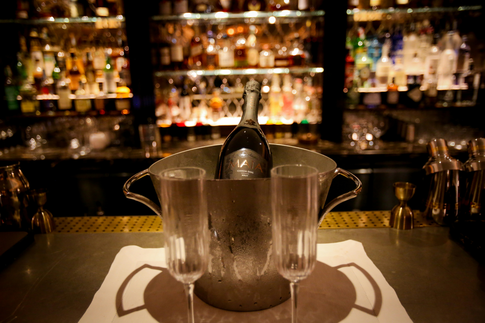

Our Story
Nestled in the heart of the Bronx, this restaurant has become a haven for food lovers seeking authentic flavors paired with a contemporary touch. Its name, meaning "Golden Night" in Italian, evokes the lush and inviting atmosphere created by its elegant decor and impeccable hospitality. Over the years, Notte Dorata has grown from a humble neighborhood spot into a celebrated destination, drawing patrons with its handmade pastas, wood-fired pizzas, and carefully curated wine selection. It's a story of dedication, community, and love for crafting unforgettable culinary experiences. Let me know if you'd like me to refine this further